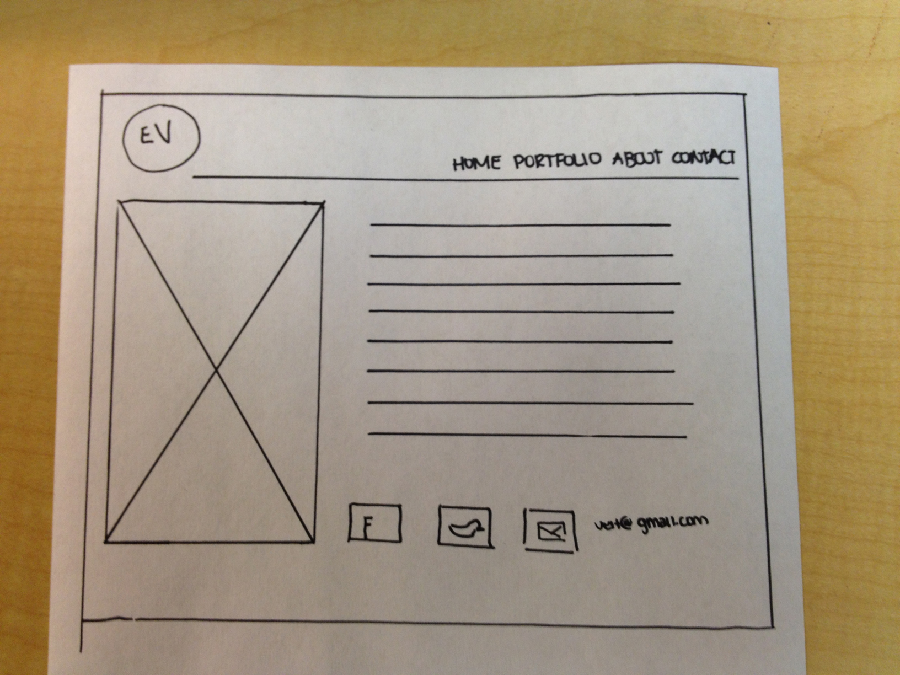

Again, I want to keep my main logo/branding image and navigation consistant on every page, as well as overall design and color scheme.
I want another image that I design that closely resembles the image on the home page to be displayed along the left side of the page. In a right-set column, I would want simple text such as:
I am a Lansing-based designer. I am working towards my Bachelors of the Arts degree from Michigan State University in Media and Information. I also have two specializations, one being Design which is administered from the College of Communication, Arts, and Sciences, and the other being Digital Humanities, which is administered from the College of Arts and Letters. I have 2+ years of experience with various forms of design, my main focus being all aspects of graphic design currently.
I love being a designer because of the endless amounts of creativity it involves, and how it allows me to interact with people to achieve something they are proud of. I am excited to continue to learn and master the fields of corporate identitiy design, web design, print design, and branding.
Below this paragraph, I would want social links to my facebook, twitter, and one to send me a email (which will go to a new gmail account I would make only for contact on this site). It is like the rest of the site- eimple, clean design which is straight to the point.
